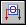

Draw a cutting plane line

Cutting plane lines are used to define section views.
-
Choose Home tab→Drawing Views group→Cutting Plane

. -
Click a part view.
Any part view can be selected as the source of the section view, including auxiliary and detail views.
-
Draw the cutting plane.
-
When you are finished drawing the cutting plane, on the ribbon, click Close Cutting Plane
 .
. -
Click to define the section view direction.
-
A cutting plane can consist of one or more elements. You can include both lines and arcs in a cutting plane.
-
To edit the shape of the cutting plane line, you can double-click it or use the Edit button on the Cutting Plane Selection command bar.
-
You can lengthen or shorten the open end of a terminator on the view direction line. Click the end of the terminator that is not connected to the cutting plane, and then drag it.
-
You can select and move the cutting plane caption text.
To learn more about drawing the cutting plane line and formatting the caption, see Cutting planes.